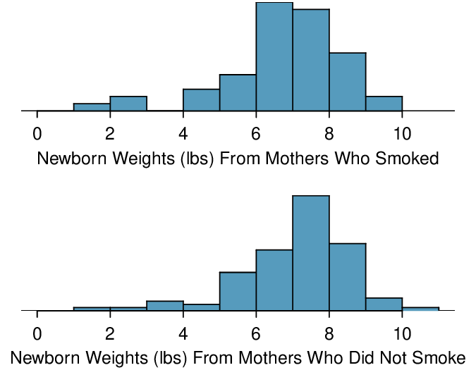
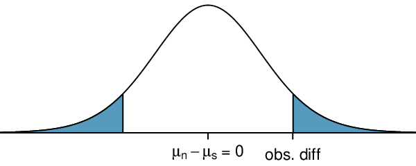
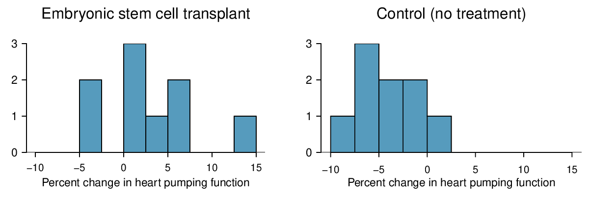
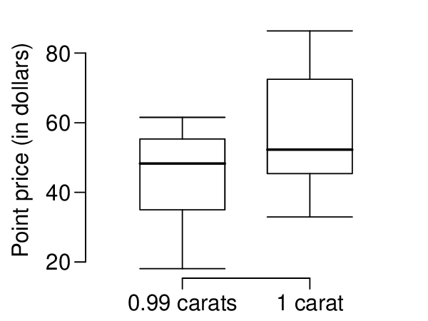

Section7.3Inference for the difference of two means
Often times we wish to compare two groups to each other to answer questions such as the following:
Does treatment using embryonic stem cells (ESCs) help improve heart function following a heart attack?
Is there convincing evidence that newborns from mothers who smoke have a different average birth weight than newborns from mothers who don’t smoke?
Is there statistically significant evidence that one variation of an exam is harder than another variation?
Are faculty willing to pay someone named “John” more than someone named “Jennifer”? If so, how much more?
Subsection7.3.1
Objectives:Learning objectives
Determine when it is appropriate to use a paired \(t\)-procedure versus a two-sample \(t\)-procedure.
State and verify whether or not the conditions for inference on the difference of two means using the \(t\)-distribution are met.
Be able to use a calculator or other software to find the degrees of freedom associated with a two-sample \(t\)-procedure.
Carry out a complete confidence interval procedure for the difference of two means.
Carry out a complete hypothesis test for the difference of two means.
Subsection7.3.2Sampling distribution for the difference of two means
In this section we are interested in comparing the means of two independent groups. We want to estimate how far apart \(\mu_{1}\) and \(\mu_{2}\) are and test whether their difference is zero or not. Before we perform inference for the difference of means, let’s review the sampling distribution for \(\bar{x}_{1} - \bar{x}_{2}\text{,}\) which will be used as the point estimate for \(\mu_{1} - \mu_{2}\text{.}\) We know from Section 4.3 that when the independence condition is satisfied, the sampling distribution for \(\bar{x}_{1} - \bar{x}_{2}\) is centered on \(\mu_{1} - \mu_{2}\) and has standard deviation of
When the individual population standard deviations are unknown, we estimate the standard deviation of \(\bar{x}_{1} - \bar{x}_{2}\) using the Standard Error, abbreviated SE, by plugging in the sample standard deviations as our best guesses of the population standard deviations:
The difference of two sample means \(\bar{x}_{1} - \bar{x}_{2}\) follows a nearly normal distribution when certain conditions are met. First, the sampling distribution for each sample mean must be nearly normal, and second, the observations must be independent, both within and between groups. Under these two conditions, the sampling distribution for \(\bar{x}_{1} - \bar{x}_{2}\) may be well approximated using the normal model.
Subsection7.3.3Checking conditions for inference on a difference of means
When comparing two means, we carry out inference on a difference of means, \(\mu_1-\mu_2\text{.}\) We will use the \(t\)-distribution just as we did when carrying out inference on a single mean. The assumptions are that the observations are independent, both between groups and within groups and that the sampling distribution of \(\bar{x}_1-\bar{x}_2\) is nearly normal. We check whether these assumptions are reasonable by verifying the following conditions.
Independent. Observations can be considered independent when the data are collected from two independent random samples or, in the context of experiments, from two randomly assigned treatments. Randomly assigning subjects to treatments is equivalent to randomly assigning treatments to subjects.
Nearly normal sampling distribution. The sampling distribution of \(\bar{x}_1-\bar{x}_2\) will be nearly normal when the sampling distribution of \(\bar{x}_1\) and of \(\bar{x}_2\) are nearly normal, that is when both population distributions are nearly normal or both sample sizes are at least 30.
As before, if the sample sizes are small and the population distributions are not known to be nearly normal, we look at the data for excessive skew or outliers. If we do no find excessive skew or outliers in either group, we consider the assumption that the populations are nearly normal to be reasonable.
Subsection7.3.4Confidence intervals for a difference of means
What’s in a name? Are employers more likely to offer interviews or higher pay to prospective employees when the name on a resume suggests the candidate is a man versus a woman? This is a challenging question to tackle, because employers are influenced by many aspects of a resume. Thinking back to Chapter 1 on data collection, we could imagine a host of confounding factors associated with name and gender. How could we possibly isolate just the factor of name? We would need an experiment in which name was the only variable and everything else was held constant.
Researchers at Yale carried out precisely this experiment. Their results were published in the Proceedings of the National Academy of Sciences (PNAS). 1
The researchers sent out resumes to faculty at academic institutions for a lab manager position. The resumes were identical, except that on half of them the applicant’s name was John and on the other half, the applicant’s name was Jennifer. They wanted to see if faculty, specifically faculty trained in conducting scientifically objective research, held implicit gender biases.
Unlike in the matched pairs scenario, each faculty member received only one resume. We are interested in comparing the mean salary offered to John relative to the mean salary offered to Jennifer. Instead of taking the average of a set of paired differences, we find the average of each group separately and take their difference. Let
\begin{align*}
\bar{x}_1:\amp \text{ mean salary offered to John }\\
\bar{x}_2: \amp \text{ mean salary offered to Jennifer }
\end{align*}
We will use \(\bar{x}_1 - \bar{x}_2\) as our point estimate for \(\mu_1-\mu_2\text{.}\) The data is given in the table below.
Interpret the point estimate 3730. Why might we want to construct a confidence interval?
Solution.
The average salary offered to John was $3,730 higher than the average salary offered to Jennifer. Because there is randomness in which faculty ended up in the John group and which faculty ended up in the Jennifer group, we want to see if the difference of $3,730 is beyond what could be expected by random variation. In order to answer this, we will first want to calculate the \(SE\) for the difference of sample means.
Example7.3.2.
Calculate and interpret the \(SE\) for the difference of sample means.
Using samples of size \(n_{1}\) and \(n_{2}\text{,}\) the typical error when using \(\bar{x}_{1}-\bar_{x}_{2}\) to estimate \(\mu_1-\mu_2\text{,}\) the real difference in mean salary that the faculty would offer John versus Jennifer, is $1151.
We see that the difference of sample means of $3,730 is more than 3 \(SE\) above 0, which makes us think that the difference being 0 is unreasonable. We would like to construct a 95% confidence interval for the theoretical difference in mean salary that would be offered to John versus Jennifer. For this, we need the degrees of freedom associated with a two-sample \(t\)-interval.
For the one-sample \(t\)-procedure, the degrees of freedom is given by the simple expression \(n-1\text{,}\) where \(n\) is the sample size. For the two-sample \(t\)-procedures, however, there is a complex formula for calculating the degrees of freedom, which is based on the two sample sizes and the two sample standard deviations. In practice, we find the degrees of freedom using software or a calculator (see Subsection 7.3.5). If this is not possible, the alternative is to use the smaller of \(n_1-1\) and \(n_2-1\text{.}\)
Degrees of freedom for two-sample T-procedures.
Use statistical software or a calculator to compute the degrees of freedom for two-sample \(t\)-procedures . If this is not possible, use the smaller of \(n_1-1\) and \(n_2-1\text{.}\)
Example7.3.3.
Verify that conditions are met for a two-sample \(t\)-test. Then, construct the 95% confidence interval for the difference of means.
Solution.
We noted previously that this is an experiment and that the two treatments (name Jennifer and name John) were randomly assigned. Also, both sample sizes are well over 30, so the distribution of \(\bar{x}_1-\bar{x}_2\) is nearly normal. Using a calculator, we find that \(df= 118.1\text{.}\) Since 118.1 is not on the \(t\)-table, we round the degrees of freedom down to 100. 2
Using technology, we get a more precise interval, based on 118.1 \(df\text{:}\)\((1461, 5999)\text{.}\)
Using a \(t\)-table at row \(df=100\) with 95% confidence, we get a \(t^{\star}\) = 1.984. We calculate the confidence interval as follows.
Based on this interval, we are 95% confident that the true difference in mean salary that these faculty would offer John versus Jennifer is between $1,495 and $6,055. That is, we are 95% confident that the mean salary these faculty would offer John for a lab manager position is between $1,446 and $6,014 more than the mean salary they would offer Jennifer for the position.
The results of these studies and others like it are alarming and disturbing. 3
A similar study sent out identical resumes with different names to investigate the importance of perceived race. Resumes with a name commonly perceived to be for a White person (e.g. Emily) were 50% more likely to receive a callback than the same resume with a name commonly perceived to be for a Black person (e.g. Lakisha). Appendix A - see resume data set.
One aspect that makes this bias so difficult to address is that the experiment, as well-designed as it was, cannot send us much signal about which faculty are discriminating. Each faculty member received only one of the resumes. A faculty member that offered “Jennifer” a very low salary may have also offered “John” a very low salary.
We might imagine an experiment in which each faculty received both resumes, so that we could compare how much they would offer a Jennifer versus a John. However, the matched pairs scenario is clearly not possible in this case, because what makes the experiment work is that the resumes are exactly the same except for the name. An employer would notice something fishy if they received two identical resumes. It is only possible to say that overall, the faculty were willing to offer John more money for the lab manager position than Jennifer. Finding proof of bias for individual cases is a persistent challenge in enforcing anti-discrimination laws.
Constructing a confidence interval for the difference of two means.
To carry out a complete confidence interval procedure to estimate the difference of two means \(\mu_1 - \mu_2\text{,}\)
Identify: Identify the parameter and the confidence level, C%.
The parameter will be a difference of means, e.g. the true difference in mean cholesterol reduction (mean treatment A \(-\) mean treatment B).
Choose: Choose the appropriate interval procedure and identify it by name.
Here we choose the 2-sample \(t\)-interval.
Check: Check conditions for the sampling distribution of \(\bar{x}_1-\bar{x}_2\) to be nearly normal.
Independence: Data come from 2 independent random samples or from a randomized experiment with 2 treatments. When sampling without replacement, check that the sample size is less than 10% of the population size for each sample.
Large samples or normal populations: \(n_1\ge 30\) and \(n_2\ge 30\) or both population distributions are nearly normal. If the sample sizes are less than 30 and the population distributions are unknown, check for strong skew or outliers in either data set. If neither is found, the condition that both population distributions are nearly normal is considered reasonable.
Calculate: Calculate the confidence interval and record it in interval form.
\(\text{ point estimate } \ \pm \ t^{\star} \times SE\ \text{ of estimate }\text{,}\)\(df\text{:}\) use calculator or other technology
point estimate: the difference of sample means \(\bar{x}_1 - \bar{x}_2\)
\(SE\) of estimate: \(\sqrt{\frac{s^2_1}{n_1}+\frac{s^2_2}{n_2}}\)
\(t^{\star}\text{:}\) use a \(t\)-table at row \(df\) and confidence level C
(, )
Conclude: Interpret the interval and, if applicable, draw a conclusion in context.
We are C% confident that the true difference in mean [...] is between and . If applicable, draw a conclusion based on whether the interval is entirely above, is entirely below, or contains the value 0.
Example7.3.4.
An instructor decided to run two slight variations of the same exam. Prior to passing out the exams, she shuffled the exams together to ensure each student received a random version. Summary statistics for how students performed on these two exams are shown in Example 7.3.4. Anticipating complaints from students who took Version B, she would like to evaluate whether the difference observed in the groups is so large that it provides convincing evidence that Version B was more difficult (on average) than Version A. Use a 95% confidence interval to estimate the difference in average score: version A - version B.
Version
\(n\)
\(\bar{x}\)
\(s\)
min
max
A
30
79.4
14
45
100
B
30
74.1
20
32
100
Solution.
Identify: The parameter we want to estimate is \(\mu_{1}-\mu_2\text{,}\) which is the true average score under Version A \(-\) the true average score under Version B. We will estimate this parameter at the 95% confidence level.
Choose: Because we are comparing two means, we will use a 2-sample \(t\)-interval.
Check: The data was collected from a randomized experiment with two treatments: Version A and Version B of test. The 10% condition does not need to be checked here since we are not sampling from a population. There were 30 students in each group, so the condition that both group sizes are at least 30 is met.
Calculate: We will calculate the confidence interval as follows.
\begin{gather*}
\text{ point estimate } \ \pm\ t^{\star} \times SE\ \text{ of estimate }
\end{gather*}
The point estimate is the difference of sample means:
In order to find the critical value \(t^{\star}\text{,}\) we must first find the degrees of freedom. Using a calculator, we find \(df=51.9\text{.}\) We round down to 50, and using a \(t\)-table at row \(df = 50\) and confidence level 95%, we get \(t^{\star} = 2.009\text{.}\)
Conclude: We are 95% confident that the true difference in average score between Version A and Version B is between -2.5 and 13.1 points. Because the interval contains both positive and negative values, the data do not convincingly show that one exam version is more difficult than the other, and the teacher should not be convinced that she should add points to the Version B exam scores.
Subsection7.3.5Technology: the 2-sample \(t\)-interval
TI-83/84: 2-sample T-interval.
Use STAT, TESTS, 2-SampTInt.
Choose STAT.
Right arrow to TESTS.
Down arrow and choose 0:2-SampTTInt.
Choose Data if you have all the data or Stats if you have the means and standard deviations.
If you choose Data, let List1 be L1 or the list that contains sample 1 and let List2 be L2 or the list that contains sample 2 (don’t forget to enter the data!). Let Freq1 and Freq2 be 1.
If you choose Stats, enter the mean, SD, and sample size for sample 1 and for sample 2.
Let C-Level be the desired confidence level and let Pooled be No.
Choose Calculate and hit ENTER, which returns:
(,)
the confidence interval
Sx1
SD of sample 1
df
degrees of freedom
Sx2
SD of sample 2
\(\bar{x}_1\)
mean of sample 1
n1
size of sample 1
\(\bar{x}_2\)
mean of sample 2
n2
size of sample 2
Casio fx-9750GII: 2-sample T-interval.
Navigate to STAT (MENU button, then hit the 2 button or select STAT).
If necessary, enter the data into a list.
Choose the INTR option (F4 button).
Choose the t option (F2 button).
Choose the 2-S option (F2 button).
Choose either the Var option (F2) or enter the data in using the List option.
Specify the test details:
Confidence level of interest for C-Level.
If using the Var option, enter the summary statistics for each group. If using List, specify the lists and leave Freq values at 1.
Choose whether to pool the data or not.
Hit the EXE button, which returns
Left, Right
ends of the confidence interval
df
degrees of freedom
\(\bar{x}1\text{,}\)\(\bar{x}2\)
sample means
sx1, sx2
sample standard deviations
n1, n2
sample sizes
Checkpoint7.3.5.
Use the data below and a calculator to find a 95% confidence interval for the difference in average scores between Version A and Version B of the exam from the previous example. 4
Choose 2-SampTInt or equivalent. Because we have the summary statistics rather than all of the data, choose Stats. Let x1\(=79.41\text{,}\)Sx1\(=14\text{,}\)n1\(=30\text{,}\)x2\(=74.1\text{,}\)Sx2\(= 20\text{,}\) and n2\(= 30\text{.}\) The interval is (-3.6, 14.2) with \(df = 51.9\text{.}\)
Version
\(n\)
\(\bar{x}\)
\(s\)
min
max
A
30
79.4
14
45
100
B
30
74.1
20
32
100
Subsection7.3.6Hypothesis testing for the difference of two means
Four cases from a data set called ncbirths, which represents mothers and their newborns in North Carolina, are shown in Table 7.3.6. We are particularly interested in two variables: weight and smoke. The weight variable represents the weights of the newborns and the smoke variable describes which mothers smoked during pregnancy. We would like to know, is there convincing evidence that newborns from mothers who smoke have a different average birth weight than newborns from mothers who don’t smoke? The smoking group includes a random sample of 50 cases and the nonsmoking group contains a random sample of 100 cases, represented in Figure 7.3.7.
Table7.3.6.Four cases from the ncbirths data set. The value “NA”, shown for the first two entries of the first variable, indicates pieces of data that are missing.
fAge
mAge
weeks
weight
sex
smoke
1
NA
13
37
5.00
female
nonsmoker
2
NA
14
36
5.88
female
nonsmoker
3
19
15
41
8.13
male
smoker
\(\vdots\)
\(\vdots\)
\(\vdots\)
\(\vdots\)
\(\vdots\)
\(\vdots\)
150
45
50
36
9.25
female
nonsmoker

Figure7.3.7.The top panel represents birth weights for infants whose mothers smoked. The bottom panel represents the birth weights for infants whose mothers who did not smoke. The distributions exhibit moderate-to-strong and strong skew, respectively.
Example7.3.8.
Set up appropriate hypotheses to evaluate whether there is a relationship between a mother smoking and average birth weight.
Solution.
Let \(\mu_{1}\) represent the mean for mothers that did smoke and \(\mu_2\) represent the mean for mothers that did not smoke. We will take the difference as: smoker \(-\) nonsmoker. The null hypothesis represents the case of no difference between the groups.
\(H_{0}: \mu_{1} - \mu_{2} = 0\text{.}\) There is no difference in average birth weight for newborns from mothers who did and did not smoke.
\(H_{A}: \mu_{1} - \mu_{2} \neq 0\text{.}\) There is some difference in average newborn weights from mothers who did and did not smoke.
We check the two conditions necessary to use the \(t\)-distribution to the difference in sample means. (1) Because the data come from a sample, we need there to be two independent random samples. In fact, there was only one random sample, but it is reasonable that the two groups here are independent of each other, so we will consider the assumption of independence reasonable. (2) The sample sizes of 50 and 100 are well over 30, so we do not worry about the distributions of the original populations. Since both conditions are satisfied, the difference in sample means may be modeled using a \(t\)-distribution.
Table7.3.9.Summary statistics for the ncbirths data set.
smoker
nonsmoker
mean
6.78
7.18
st. dev.
1.43
1.60
samp. size
50
100
Example7.3.10.
We will use the summary statistics in Table 7.3.9 for this exercise.
(a) What is the point estimate of the population difference, \(\mu_{1} - \mu_{2}\text{?}\) (b) Compute the standard error of the point estimate from part (a).
Solution.
(a) The point estimate is the difference of sample means: \(\bar{x}_{1} - \bar{x}_{2} = 6.78-7.18=-0.40\) pounds.
(b) The standard error for a difference of sample means is calculated analogously to the standard deviation for a difference of sample means.
We have already found the point estimate and the \(SE\) of estimate. The null hypothesis is that the two means are equal, or that their difference equals 0. The null value for the difference, therefore is 0. We now have everything we need to compute the test statistic.
\begin{gather*}
T = \frac{\text{ point estimate } - \text{ null value } }{SE \text{ of estimate } } = \frac{\ 0.40 - 0\ }{0.26} = 1.54
\end{gather*}
Example7.3.12.
Draw a picture to represent the p-value for this hypothesis test, then calculate the p-value.
Solution.
To depict the p-value, we draw the distribution of the point estimate as though \(H_0\) were true and shade areas representing at least as much evidence against \(H_0\) as what was observed. Both tails are shaded because it is a two-sided test.

We saw previously that the degrees of freedom can be found using software or using the smaller of \(n_1-1\) and \(n_2-1\text{.}\) If we use \(50-1=49\) degrees of freedom, we find that the area in the upper tail is 0.065. The p-value is twice this, or \(2\times 0.065= 0.130\text{.}\) See Subsection 7.3.7 for a shortcut to compute the degrees of freedom and p-value on a calculator.
Example7.3.13.
What can we conclude from this p-value? Use a significance level of \(\alpha=0.05\text{.}\)
Solution.
This p-value of 0.130 is larger the significance level of 0.05, so we do not reject the null hypothesis. There is not sufficient evidence to say there is a difference in average birth weight of newborns from North Carolina mothers who did smoke during pregnancy and newborns from North Carolina mothers who did not smoke during pregnancy.
Example7.3.14.
Does the conclusion to Example 7.3.11 mean that smoking and average birth weight are unrelated?
Solution.
Not necessarily. It is possible that there is some difference but that we did not detect it. The result must be considered in light of other evidence and research. In fact, larger data sets do tend to show that women who smoke during pregnancy have smaller newborns.
Checkpoint7.3.15.
If we made an error in our conclusion, which type of error could we have made: Type I or Type II? 5
Since we did not reject \(H_0\text{,}\) it is possible that we made a Type II Error. It is possible that there is some difference but that we did not detect it.
Checkpoint7.3.16.
If we made a Type II Error and there is a difference, what could we have done differently in data collection to be more likely to detect the difference? 6
We could have collected more data. If the sample sizes are larger, we tend to have a better shot at finding a difference if one exists. In other words, increasing the sample size increases the power of the test.
Hypothesis test for the difference of two means.
To carry out a complete hypothesis test to test the claim that two means \(\mu_1\) and \(\mu_2\) are equal to each other,
Identify: Identify the hypotheses and the significance level, \(\alpha\text{.}\)
\(H_0\text{:}\)\(\mu_1=\mu_2\)
\(H_A\text{:}\)\(\mu_1\ne \mu_2\text{;}\)\(H_A\text{:}\)\(\mu_1>\mu_2\text{;}\) or \(H_A\text{:}\)\(\mu_1\lt \mu_2\)
Choose: Choose the appropriate test procedure and identify it by name.
Here we choose the 2-sample \(t\)-test.
Check: Check conditions for the sampling distribution of \(\bar{x}_1-\bar{x}_2\) to be nearly normal.
Independence: Data come from 2 independent random samples or from a randomized experiment with 2 treatments. When sampling without replacement, check that the sample size is less than 10% of the population size for each sample.
Large samples or normal populations: \(n_1\ge 30\) and \(n_2\ge 30\) or both population distributions are nearly normal. If the sample sizes are less than 30 and the population distributions are unknown, check for excessive skew or outliers in either data set. If neither is found, the condition that both population distributions are nearly normal is considered reasonable.
Calculate: Calculate the \(t\)-statistic, \(df\text{,}\) and p-value.
\(T = \frac{\text{point estimate} - \text{null value} }{SE \text{ of estimate } }\)\(df\text{:}\) use calculator or other technology
point estimate: the difference of sample means \(\bar{x}_1 - \bar{x}_2\)
\(SE\) of estimate: \(\sqrt{\frac{s^2_1}{n_1}+\frac{s^2_2}{n_2}}\)
p-value = (based on the \(t\)-statistic, the \(df\text{,}\) and the direction of \(H_A\))
Conclude: Compare the p-value to \(\alpha\text{,}\) and draw a conclusion in context.
If the p-value is \(\lt \alpha\text{,}\) reject \(H_0\text{;}\) there is sufficient evidence that [\(H_A\) in context].
If the p-value is \(> \alpha\text{,}\) do not reject \(H_0\text{;}\) there is not sufficient evidence that [\(H_A\) in context].
Example7.3.17.
Do embryonic stem cells (ESCs) help improve heart function following a heart attack? The following table and figure summarize results from an experiment to test ESCs in sheep that had a heart attack.

\(n\)
\(\bar{x}\)
\(s\)
ESCs
9
3.50
5.17
control
9
-4.33
2.76
Each of these sheep was randomly assigned to the ESC or control group, and the change in their hearts’ pumping capacity was measured. A positive value generally corresponds to increased pumping capacity, which suggests a stronger recovery. The sample data is also graphed. Use the given information and an appropriate statistical test to answer the research question.
Solution.
Identify: Let \(\mu_1\) be the mean percent change for sheep that receive ESC and let \(\mu_2\) be the mean percent change for sheep in the control group. We will use an \(\alpha=0.05\) significance level.
\(H_0\text{:}\)\(\mu_{1} - \mu_{2} = 0\text{.}\) The stem cells do not improve heart pumping function.
\(H_A\text{:}\)\(\mu_{1} - \mu_{2} > 0\text{.}\) The stem cells do improve heart pumping function.
Choose: Because we are hypothesizing about a difference of means we choose the 2-sample \(t\)-test.
Check: The data come from a randomized experiment with two treatment groups: ESC and control. Because this is an experiment, we do not need to check the 10% condition. The group sizes are small, but the data show no excessive skew or outliers, so the assumption that the population distributions are nearly normal is reasonable.
Calculate: We will calculate the \(t\)-statistic and the p-value.
\begin{gather*}
T = \frac{\text{ point estimate } - \text{ null value } }{SE \text{ of estimate } }
\end{gather*}
The point estimate is the difference of sample means:
Because \(H_A\) is an upper tail test ( \(>\) ), the p-value corresponds to the area to the right of \(t=4.01\) with the appropriate degrees of freedom. Using a calculator, we find get \(df=12.2\) and p-value \(= 8.4\times 10^{-4}=0.00084\text{.}\)
Conclude: The p-value is much less than 0.05, so we reject the null hypothesis. There is sufficient evidence that embryonic stem cells improve the heart’s pumping function in sheep that have suffered a heart attack.
Subsection7.3.7Technology: the 2-sample \(t\)-test
TI-83/84: 2-sample T-test.
Use STAT, TESTS, 2-SampTTest.
Choose STAT.
Right arrow to TESTS.
Choose 4:2-SampTTest.
Choose Data if you have all the data or Stats if you have the means and standard deviations.
If you choose Data, let List1 be L1 or the list that contains sample 1 and let List2 be L2 or the list that contains sample 2 (don’t forget to enter the data!). Let Freq1 and Freq2 be 1.
If you choose Stats, enter the mean, SD, and sample size for sample 1 and for sample 2
Choose \(\ne\text{,}\)\(\lt\text{,}\) or \(\gt\) to correspond to \(H_A\text{.}\)
Let Pooled be NO.
Choose Calculate and hit ENTER, which returns:
t
t statistic
Sx1
SD of sample 1
p
p-value
Sx2
SD of sample 2
df
degrees of freedom
n1
size of sample 1
\(\bar{x}_1\)
mean of sample 1
n2
size of sample 2
\(\bar{x}_2\)
mean of sample 2
Casio fx-9750GII: 2-sample T-test.
Navigate to STAT (MENU button, then hit the 2 button or select STAT).
If necessary, enter the data into a list.
Choose the TEST option (F3 button).
Choose the t option (F2 button).
Choose the 2-S option (F2 button).
Choose either the Var option (F2) or enter the data in using the List option.
Specify the test details:
Specify the sidedness of the test using the F1, F2, and F3 keys.
If using the Var option, enter the summary statistics for each group. If using List, specify the lists and leave Freq values at 1.
Choose whether to pool the data or not.
Hit the EXE button, which returns
\(\mu1 - \mu2\)
alt. hypothesis
\(\bar{x}1\text{,}\)\(\bar{x}2\)
sample means
t
t statistic
sx1, sx2
sample standard deviations
p
p-value
n1, n2
sample sizes
df
degrees of freedom
Checkpoint7.3.18.
Use the data below and a calculator to find the test statistics and p-value for a one-sided test, testing whether there is evidence that embryonic stem cells (ESCs) help improve heart function for sheep that have experienced a heart attack. 7
Choose 2-SampTTest or equivalent. Because we have the summary statistics rather than all of the data, choose Stats. Let x1\(=3.50\text{,}\)Sx1\(=5.17\text{,}\)n1\(=9\text{,}\)x2\(=-4.33\text{,}\)Sx2\(= 2.76\text{,}\) and n2\(= 9\text{.}\) We get t\(= 4.01\text{,}\) and the p-value p\(= 8.4 \times 10^{-4}= 0.00084\text{.}\) The degrees of freedom for the test is df\(= 12.2\text{.}\)
\(n\)
\(\bar{x}\)
\(s\)
ESCs
9
3.50
5.17
control
9
-4.33
2.76
Subsection7.3.8Section summary
This section introduced inference for a difference of means, which is distinct from inference for a mean of differences. To calculate a difference of means, \(\bar{x}_1-\bar{x}_2\text{,}\) we first calculate the mean of each group, then we take the difference between those two numbers. To calculate a mean of difference, \(\bar{x}_{\text{diff}}\text{,}\) we first calculate all of the differences, then we find the mean of those differences.
Inference for a difference of means is based on the \(t\)-distribution. The degrees of freedom is complicated to calculate and we rely on a calculator or other software to calculate this. 8
If this is not available, one can use \(df=min(n_1-1, n_2-1)\text{.}\)
When there are two samples or treatments and the parameter of interest is a difference of means:
Estimate \(\mu_1-\mu_2\) at the C% confidence level using a 2-sample t-interval.
Test \(H_0\text{:}\)\(\mu_1-\mu_2=0\) at the \(\alpha\) significance level using a 2-sample t-test .
The 2-sample t-test and t-interval require the sampling distribution for \(\bar{x}_{1}-\bar{x}_{2}\) to be nearly normal. For this reason we must check that the following conditions are met.
Independence: The data should come from 2 independent random samples or from a randomized experiment with 2 treatments. When sampling without replacement, check that the sample size is less than 10% of the population size for each sample.
Large samples or normal populations: \(n_1\ge 30\) and \(n_2\ge 30\) or both population distributions are nearly normal. If the sample sizes are less than 30 and it is not known that both population distributions are nearly normal, check for excessive skew or outliers in the data. If neither exists, the condition that both population distributions could be nearly normal is considered reasonable.
When the conditions are met, we calculate the confidence interval and the test statistic as follows.
Confidence interval: \(\text{ point estimate } \ \pm\ t^{\star} \times SE\ \text{ of estimate }\)
Test statistic: \(T = \frac{\text{point estimate} - \text{null value} }{SE \text{ of estimate } }\)
Here the point estimate is the difference of sample means: \(\bar{x}_1-\bar{x}_2\text{.}\)
The \(SE\) of estimate is the \(SE\) of a difference of sample means: \(\sqrt{\frac{s^2_1}{n_1}+\frac{s^2_2}{n_2}}\text{.}\)
Find and record the \(df\) using a calculator or other software.
Exercises7.3.9Exercises
1.Diamonds, Part I.
Prices of diamonds are determined by what is known as the 4 Cs: cut, clarity, color, and carat weight. The prices of diamonds go up as the carat weight increases, but the increase is not smooth. For example, the difference between the size of a 0.99 carat diamond and a 1 carat diamond is undetectable to the naked human eye, but the price of a 1 carat diamond tends to be much higher than the price of a 0.99 diamond. In this question we use two random samples of diamonds, 0.99 carats and 1 carat, each sample of size 23, and compare the average prices of the diamonds. In order to be able to compare equivalent units, we first divide the price for each diamond by 100 times its weight in carats. That is, for a 0.99 carat diamond, we divide the price by 99. For a 1 carat diamond, we divide the price by 100. The distributions and some sample statistics are shown below. 9
Conduct a hypothesis test to evaluate if there is a difference between the average standardized prices of 0.99 and 1 carat diamonds. Make sure to state your hypotheses clearly, check relevant conditions, and interpret your results in context of the data.
0.99 carats
1 carat
Mean
$44.51
$56.81
SD
$13.32
$16.13
n
23
23

Solution.
Identify: \(H_{0}: \mu_{0.99} = \mu_{1}\) and \(H_{A}: µ_{0.99} \neq \mu_{1}\text{;}\) Let \(\alpha = 0.05\text{.}\) Choose: 2-sample t-test. Check: Independence: Both samples are random and represent less than 10% of their respective populations. Also, we have no reason to think that the 0.99 carats are not independent of the 1 carat diamonds since they are both sampled randomly. Normal populations: The sample distributions are not very skewed, hence we find it reasonable that the underlying population distributions are nearly normal. Calculate: \(T = −2.82\text{,}\)\(df = 42.5\text{,}\)\(\text{p-value} = 0.007\text{.}\) Conclude: Since \(\text{p-value} \lt 0.05\text{,}\) reject \(H_{0}\text{.}\) The data provide convincing evidence that the average standardized price of 0.99 carats and 1 carat diamondsare different.
2.Diamonds, Part II.
In Exercise 7.3.9.1, we discussed diamond prices (standardized by weight) for diamonds with weights 0. 99 carats and 1 carat. See the table for summary statistics, and then construct a 95% confidence interval for the average difference between the standardized prices of 0.99 and 1 carat diamonds. You may assume the conditions for inference are met.
0.99 carats
1 carat
Mean
$44.51
$56.81
SD
$13.32
$16.13
n
23
23
3.Chicken diet and weight, Part I.
Chicken farming is a multi-billion dollar industry, and any methods that increase the growth rate of young chicks can reduce consumer costs while increasing company profits, possibly by millions of dollars. An experiment was conducted to measure and compare the effectiveness of various feed supplements on the growth rate of chickens. Newly hatched chicks were randomly allocated into six groups, and each group was given a different feed supplement. Below are some summary statistics from this data set along with box plots showing the distribution of weights by feed type. 10
Describe the distributions of weights of chickens that were fed linseed and horsebean.
Do these data provide strong evidence that the average weights of chickens that were fed linseed and horsebean are different? Use a 5% significance level.
What type of error might we have committed? Explain.
Would your conclusion change if we used \(\alpha = 0.01\text{?}\)
Solution.
Chicken fed linseed weighed an average of 218.75 grams while those fed horsebean weighed an average of 160.20 grams. Both distributions are relatively symmetric with no apparent outliers. There is more variability in the weights of chicken fed linseed.
\(H_{0} : \mu_{ls} = \mu_{hb}\text{.}\)\(H_{A} : \mu_{ls} \ne \mu_{hb}\text{.}\) We leave the conditions to you to consider. \(T = 3.02\text{,}\)\(df = min(11, 9) = 9 \rightarrow \text{p-value } = 0.014\text{.}\) Since \(\text{p-value } < 0.05\text{,}\) reject \(H_{0}\text{.}\) The data provide strong evidence that there is a significant difference between the average weights of chickens that were fed linseed and horsebean.
Type 1 Error, since we rejected \(H_{0}\text{.}\)
Yes, since \(\text{p-value } > 0.01\text{,}\) we would not have rejected \(H_{0}\text{.}\)
4.Fuel efficiency of manual and automatic cars, Part I.
Each year the US Environmental Protection Agency (EPA) releases fuel economy data on cars manufactured in that year. Below are summary statistics on fuel efficiency (in miles/gallon) from random samples of cars with manual and automatic transmissions. Do these data provide strong evidence of a difference between the average fuel efficiency of cars with manual and automatic transmissions in terms of their average city mileage? Assume that conditions for inference are satisfied. 11
Casein is a common weight gain supplement for humans. Does it have an effect on chickens? Using data provided in Exercise 7.3.9.3, test the hypothesis that the average weight of chickens that were fed casein is different than the average weight of chickens that were fed soybean. If your hypothesis test yields a statistically significant result, discuss whether or not the higher average weight of chickens can be attributed to the casein diet. Assume that conditions for inference are satisfied.
Solution.
\(H_{0} : \mu_{C} = \mu_{S}\text{.}\)\(H_{A} : \mu_{C} \ne \mu_{S}\text{.}\)\(T = 3.27\text{,}\)\(df = 11 \rightarrow \text{p-value } = 0.007\text{.}\) Since \(\text{p-value } < 0.05\text{,}\) reject \(H_{0}\text{.}\) The data provide strong evidence that the average weight of chickens that were fed casein is different than the average weight of chickens that were fed soybean (with weights from casein being higher). Since this is a randomized experiment, the observed difference can be attributed to the diet.
6.Fuel efficiency of manual and automatic cars, Part II.
The table provides summary statistics on highway fuel economy of the same 52 cars from Exercise 7.3.9.4. Use these statistics to calculate a 98% confidence interval for the difference between average highway mileage of manual and automatic cars, and interpret this interval in the context of the data. 12
Subjects from Central Prison in Raleigh, NC, volunteered for an experiment involving an “isolation” experience. The goal of the experiment was to find a treatment that reduces subjects’ psychopathic deviant T scores. This score measures a person’s need for control or their rebellion against control, and it is part of a commonly used mental health test called the Minnesota Multiphasic Personality Inventory (MMPI) test. The experiment had three treatment groups:
Four hours of sensory restriction plus a 15 minute “therapeutic” tape advising that professional help is available.
Four hours of sensory restriction plus a 15 minute “emotionally neutral” tape on training hunting dogs.
Four hours of sensory restriction but no taped message.
Forty-two subjects were randomly assigned to these treatment groups, and an MMPI test was administered before and after the treatment. Distributions of the differences between pre and post treatment scores (pre - post) are shown below, along with some sample statistics. Use this information to independently test the effectiveness of each treatment. Make sure to clearly state your hypotheses, check conditions, and interpret results in the context of the data. 13
Let \(\mu_{diff} = \mu_{pre}-\mu_{post}\text{.}\)\(H_{0}: \mu_{diff} = 0:\) Treatment has no effect. \(H_{A}: \mu_{diff} \neq 0\text{.}\) Treatment has an effect on P.D.T. scores, either positive or negative. Conditions: The subjects are randomly assigned to treatments, so independence within and between groups is satisfied. All three sample sizes are smaller than 30, so we look for clear outliers. There is a borderline outlier in the first treatment group. Since it is borderline, we will proceed, but we should report this caveat with any results. For all three groups: \(df = 13\text{.}\)\(T_{1} = 1.89 \rightarrow (\text{p-value } = 0.081\text{,}\)\(T_{2} = 1.35 \rightarrow (\text{p-value } = 0.200)\text{,}\)\(T_{3} = -1.40 \rightarrow (\text{p-value } = 0.185)\text{.}\) We do not reject the null hypothesis for any of these groups. As earlier noted, there is some uncertainty about if the method applied is reasonable for the first group.
8.True / False: comparing means.
Determine if the following statements are true or false, and explain your reasoning for statements you identify as false.
When comparing means of two samples where \(n_1 = 20\) and \(n_2 = 40\text{,}\) we can use the normal model for the difference in means since \(n_2 \ge 30\text{.}\)
As the degrees of freedom increases, the \(t\)-distribution approaches normality.
We use a pooled standard error for calculating the standard error of the difference between means when sample sizes of groups are equal to each other.
Subsection7.3.10Chapter Highlights
We’ve reviewed a wide set of inference procedures over the last 3 chapters. Let’s revisit each and discuss the similarities and differences among them. The following confidence intervals and tests are structurally the same — they all involve inference on a population parameter, where that parameter is a proportion, a difference of proportions, a mean, a mean of differences, or a difference of means.
1-proportion \(z\)-test/interval
2-proportion \(z\)-test/interval
1-sample \(t\)-test/interval
1-sample \(t\)-test/interval with paired data
2-sample \(t\)-test/interval
The above inferential procedures all involve a point estimate, a standard error of the estimate, and an assumption about the shape of the sampling distribution of the point estimate.
From Chapter 6, the \(\chi^2\) tests and their uses are as follows:
\(\chi^2\) goodness of fit - compares a categorical variable to a known/fixed distribution.
\(\chi^2\) test of homogeneity - compares a categorical variable across multiple groups.
\(\chi^2\) test of independence - looks for association between two categorical variables.
\(\chi^2\) is a measure of overall deviation between observed values and expected values. These tests stand apart from the others because when using \(\chi^2\) there is not a parameter of interest. For this reason there are no confidence intervals using \(\chi^2\text{.}\) Also, for \(\chi^2\) tests, the hypotheses are usually written in words, because they are about the distribution of one or more categorical variables, not about a single parameter.
While formulas and conditions vary, all of these procedures follow the same basic logic and process.
For a confidence interval, identify the parameter to be estimated and the confidence level. For a hypothesis test, identify the hypotheses to be tested and the significance level.
Choose the correct procedure.
Check that both conditions for its use are met.
Calculate the confidence interval or the test statistic and p-value, as well as the \(df\) if applicable.
Interpret the results and draw a conclusion based on the data.
For a summary of these hypothesis test and confidence interval procedures (including one more that we will encounter in Section 8.4), see the Inference Guide C.2.